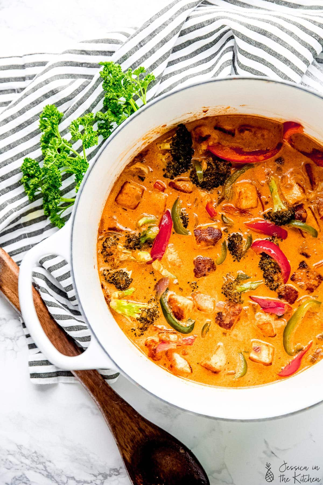

Red Curry

Description
This fragrant Thai Red Curry is packed with flavor and is so much better than takeout! We load an abundance of veggies and tender tofu to a fragrant curry base. Add your favorite grain and dinner is served!
Case in point? This vegan Thai red curry. Once you've cut the veggies and prepared the tofu, you're mere minutes away from a flavourful homemade curry—and since you're making it yourself, you can customize it to your own tastes and preferences.
My favorite thing about this Thai red curry with tofu is that it's one of those glorious recipes that tastes even better after a few days in the fridge as the flavours mingle. This makes it perfect for meal prep! Make a big pot of rice or quinoa and enjoy homemade lunches all week long!
Ingredients
Tofu Marinade
- Firm or extra-firm tofu
- Coconut milk
- Red curry paste
- Salt and pepper
- Cornstarch
- Coconut oil
Red Curry
- Coconut oil
- Red curry paste
- Red onion
- Garlic
- Broccoli
- Red bell pepper
- Green bell pepper
- Carrots
- Sea salt
- Ground black pepper
- Coconut sugar or raw sugar
- Light soy sauce or liquid aminos or tamari
- Coconut milk
- Lime juice
- Thai basil
- Sambal oelek or sriracha (optional)
Steps
Tofu Marinade
- Cut the pressed tofu into cubes, or tear into cube size pieces for extra texture.
- Mix the coconut milk with the red curry paste to blend it out. Mix in the salt, pepper and cornstarch into the mix (everything except the oil) until it's all thoroughly mixed together. Add the tofu cubes into the bowl and toss to combine with the mix, until all pieces are coated. Set aside or cover and marinate for at least 15 minutes.
- In a pan over medium-high heat, heat the tablespoon of coconut oil. Once hot, add in the tofu cubes and brown and crisp until all sides are completely browned and crisped up. Remove the tofu and set aside.
Red Curry
- In the same pan over medium heat, add 1 more tablespoon of the coconut oil.
- Add in the curry paste to fry it, stirring into the coconut oil, for about 1 minute. Add in the chopped onion and cook until onion is slightly translucent about 8 minutes.
- Add in the garlic, stir together, then the second tablespoon of coconut oil, then add the broccoli, red bell pepper, green bell pepper and carrots.
- Add the sea salt, black pepper, coconut sugar, and liquid aminos on top and stir everything together. Reduce heat to medium and cook down, stirring, until carrots are tender-crisp, about 10-15 minutes.
- Add in the coconut milk and stir. Add in the crispy tofu, then let it simmer for about 5 minutes. Squeeze the lime over, stir, and then remove from heat.
- Add in the thai basil on top (optional!), and stir in the sambal oelek (or Sriracha) if using. Serve with rice, naan bread and a lime wedge. Enjoy!!